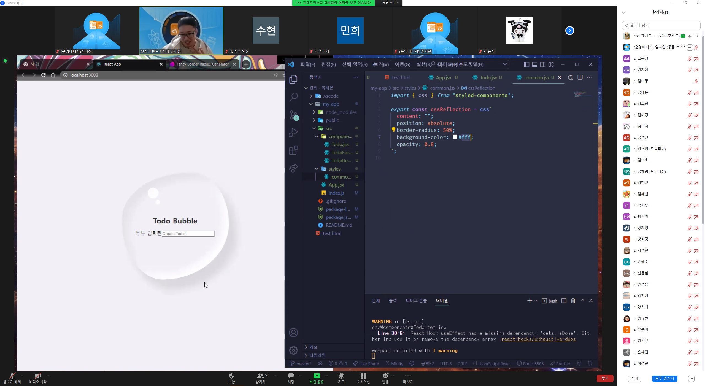
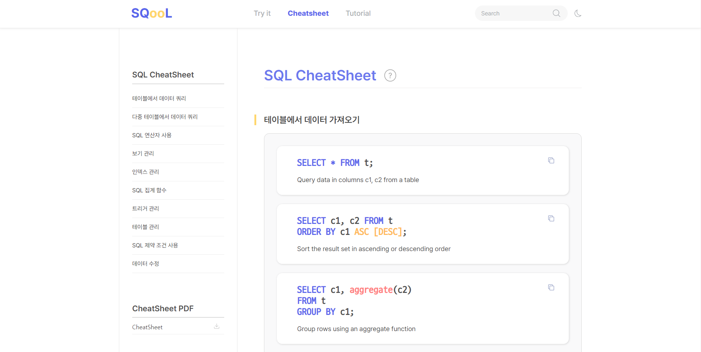

엄선된 프로젝트
저의 프로젝트입니다. 웹 접근성과 UX를 최대한 고려하여 시멘틱한 태그를 사용하였고 모두 직접 디자인했습니다.
개인 이력
함께하기를 좋아하는 저는 같이 성장하기 위해 이러한 일을 참여했습니다.
-

동료특강
50명이 넘는 동료들 앞에서 동료특강을 진행했습니다.
실습의 중요성을 강조하고자 [리액트를 활용한 투두리스트 만들기]라는 주제로 구현과정을 선보였고 동료들에게 "과제에 대한 두려움이 있었으나 이번 강의가 좋은 울림이 되었다." 라는 평을 받았습니다. -

- 